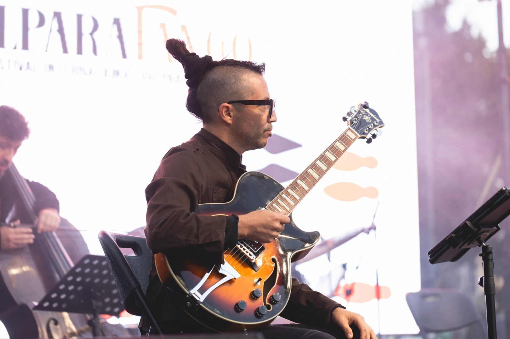

Declaración
María no entra para ser mirada. Entra para nombrarse. Su voz abre la noche.
La música de Piazzolla mirando las heridas de la ciudad.
Dirección: Valentina Galaz y Francisca Crisópulos
Si nadie ha renacido, ella podrá.
María se declara dueña de su deseo. Gastón descubre la herida de la ciudad. Nina corre perseguida por la noche. Y desde los restos de una escena derrumbada, la ternura se vuelve fuerza para imaginar Buenos Aires en el año 3001.


Corre, seduce, abandona, persigue y renace. Los músicos son el motor sonoro de esa ciudad. María habita el territorio del deseo. Gastón ocupa la intemperie. Después del derrumbe, ya no hay territorios limpios.
Rosas. Mesa. Silla. Banco. Sirena. Clavel de otro planeta.
María no entra para ser mirada. Entra para nombrarse. Su voz abre la noche.
Buenos Aires corre hasta que Gastón ve al niño que vende rosas en plena noche.
Cuando cae el ángel, cae también la forma que sostenía la escena.
Gastón escucha otra voz. No viene de la calle. Viene de su propio cuerpo.
María no salva a Nina. La reconoce. La sirena corta el aire.
La ternura se vuelve fuerza. El año 3001 aparece como promesa.
Declaración de María como cuerpo, voz, deseo y principio.
La ciudad se activa: vértigo, ruido, pulso y una tristeza que aparece y desaparece.
Gastón descubre la herida: un niño vendiendo rosas en plena noche.
Después de ver, Gastón ya no vuelve entero. Se convierte en pájaro nocturno.
La escenografía se cae. La mesa, las rosas y las sillas pierden su lugar.
Gastón acepta la locura como verdad y comienza su transfiguración.
María y Nina se reconocen desde la vulnerabilidad. Nina corre.
La ternura de María se vuelve fuerza creadora.
Renacimiento y promesa de fundar otra ciudad.
Después del futuro, vuelve la memoria.
Videos de trabajo para mostrar pulso, atmósfera, sonido y tensión escénica.
La ciudad se activa: velocidad, sombra y ritmo.
La noche revela la herida que nadie quiere mirar.
La escena se rompe. Todo pierde su lugar.
La ternura se vuelve potencia de nacimiento.
María es deseo, voz, ternura y renacimiento. Gastón es mirada, herida, locura y transformación. Nina es urgencia, vulnerabilidad y dignidad. Buenos Aires es organismo feroz.


Piazzollamente nace para entrar en la música de Astor Piazzolla no como quien visita un repertorio, sino como quien atraviesa una ciudad.
En su obra hay deseo, ruido, ternura, calle, furia, belleza y herida.
Piazzolla no ordena la realidad. La desborda.


